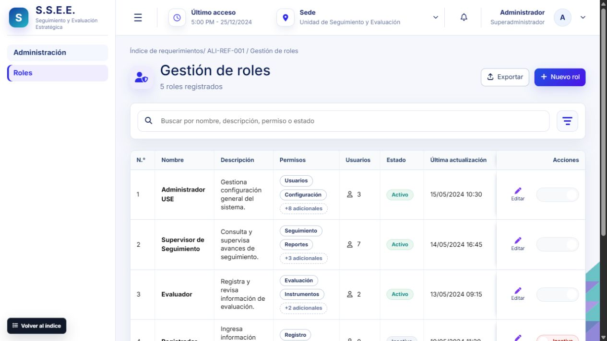
PROYECTO DESTACADO
SSEE
21 demos sintéticas para revisar roles, permisos y flujos de gestión.
Ver caso de estudioSoy Gianmarco Lozano. Diseño interfaces y experiencias digitales con atención a las personas, al producto y a cada detalle de implementación.

21 demos sintéticas para revisar roles, permisos y flujos de gestión.
Ver caso de estudioSistemas, experiencias web y marcas. Cada proyecto abre su caso de estudio y sus fuentes.
Interfaces, flujos y herramientas para resolver tareas concretas.
Diseño UX/UI · Prototipo
21 demos sintéticas para revisar roles, permisos, autenticación y flujos de gestión.
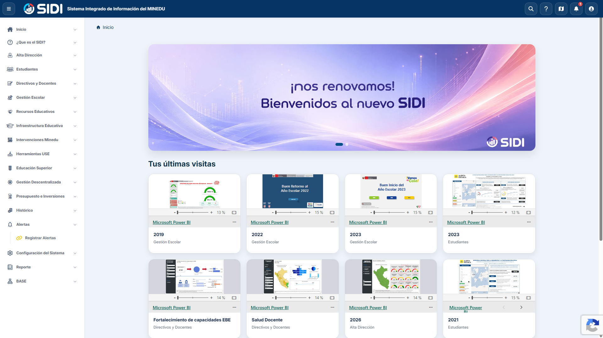
Diseño UX/UI · Prototipo
Sistema integrado con una plantilla HTML/CSS/JavaScript y páginas públicas de acceso v1.2.
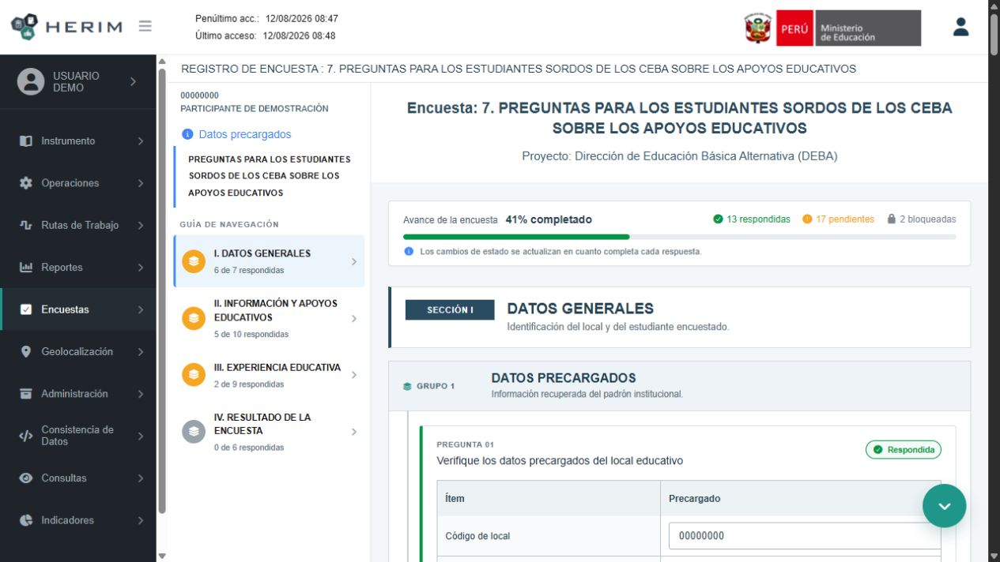
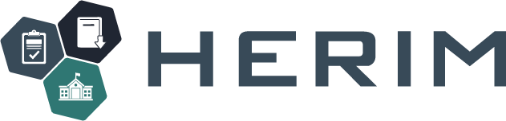
Diseño UX/UI · Proyecto institucional
Diseño de encuestas, bandejas, estados y validaciones para el recojo de información.
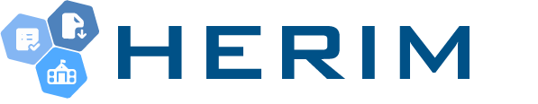
Diseño UX/UI · En documentación
Registro visual de HERIM 1. Las capturas y el contexto del proyecto están pendientes de documentar.
Proyecto en mi archivo de GitHub · Prototipo educativo
Sistema de métricas para la educación.
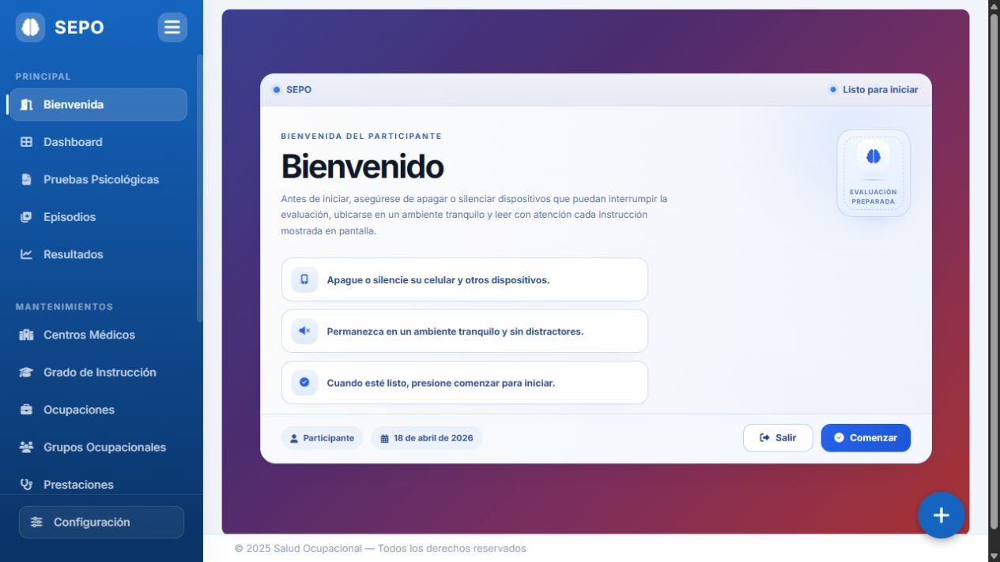
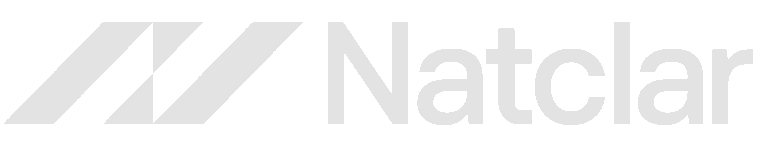
Diseño UX/UI · Prototipo de salud ocupacional
Sistema de salud ocupacional para configurar fichas, evaluaciones y prestaciones.
Proyecto en mi archivo de GitHub · Plantilla
Plantilla oficial del proyecto GESI, según la descripción del repositorio.
Sitios y experiencias digitales para marcas y servicios.
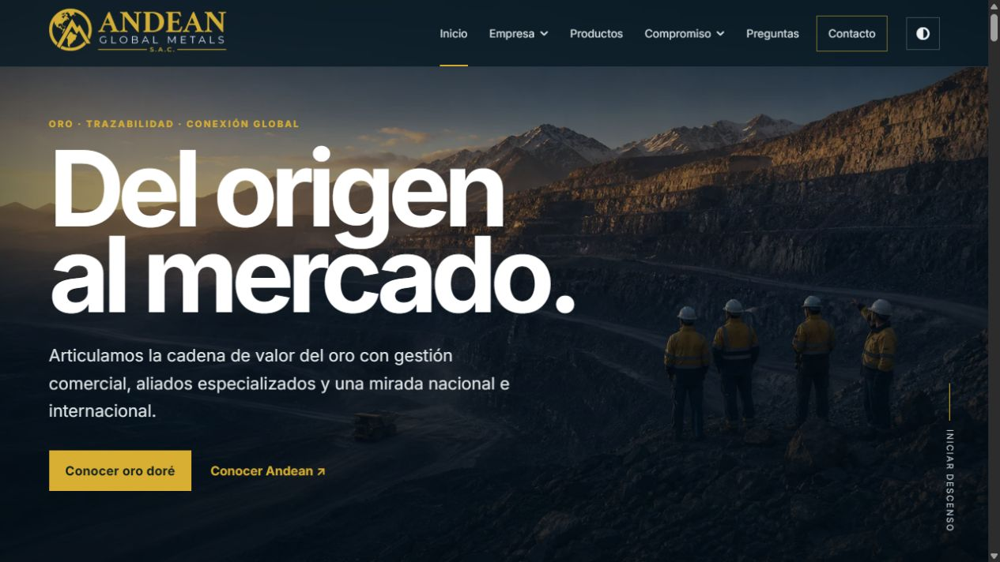
Diseño UX/UI y desarrollo web · Sitio publicado
Una experiencia editorial que conecta el origen del oro con su recorrido comercial.
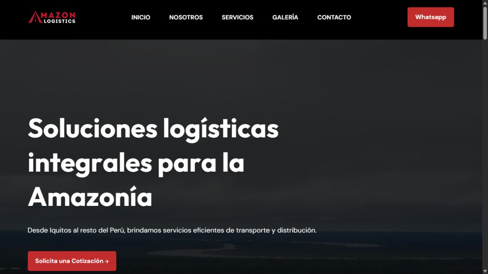
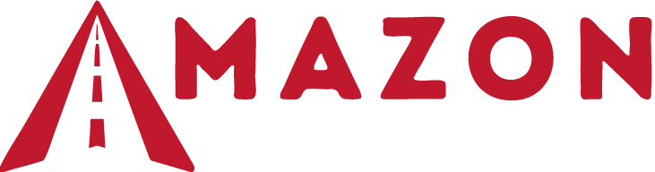
Diseño UX/UI y desarrollo web · Sitio publicado
Servicios de transporte y distribución presentados para el contexto de la Amazonía peruana.
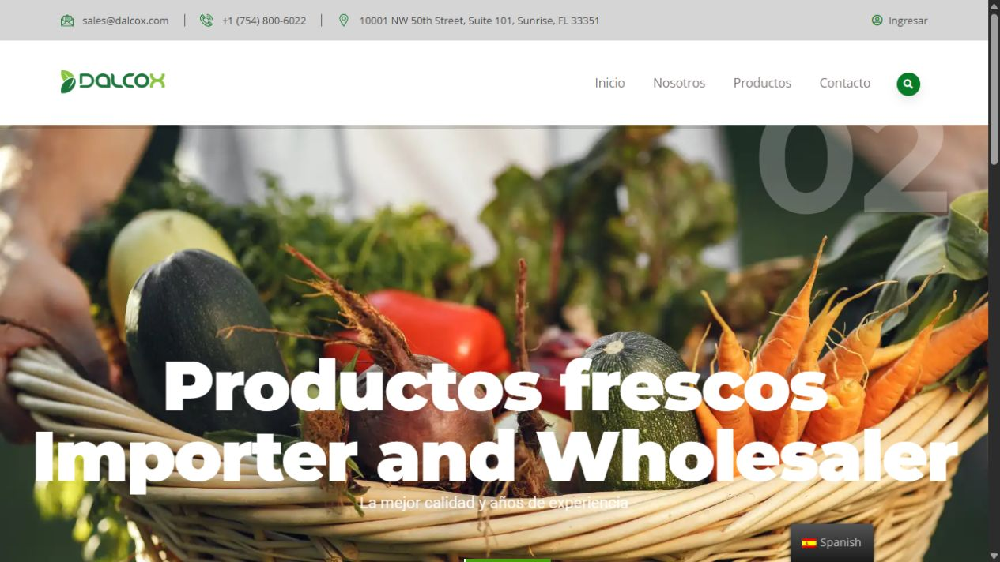
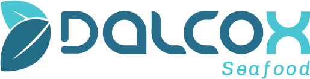
Diseño UX/UI y desarrollo web · Sitio publicado
Presencia digital para una empresa de productos frescos entre Latinoamérica y Estados Unidos.
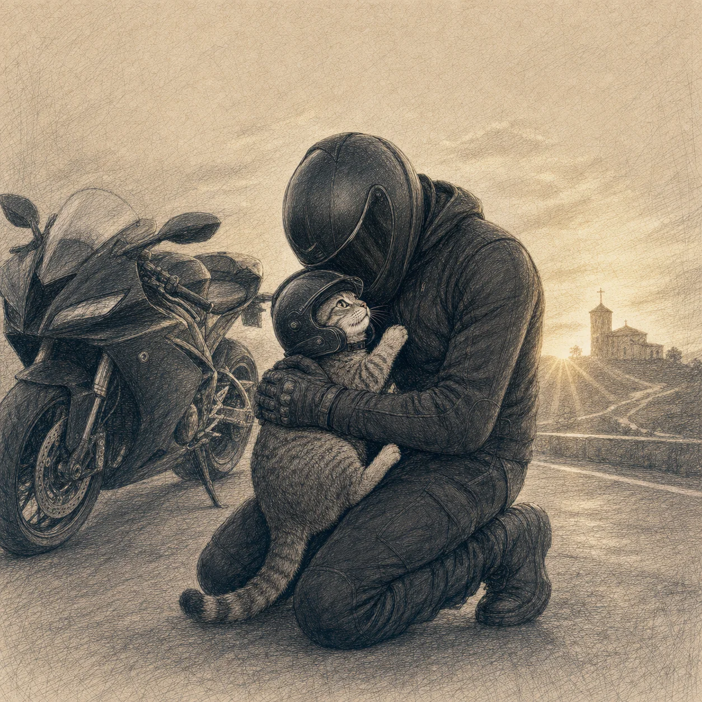
Diseño UX/UI y desarrollo web · Proyecto personal
Sitio personal con música, tienda, historia y misión de Gian Lozano.
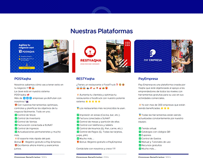
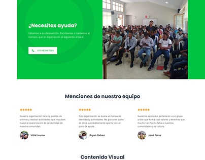
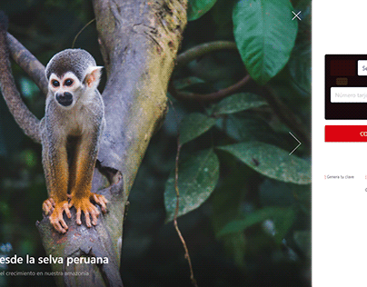
Diseño web · Proyecto en Behance
Actualización de interfaz y estilos de una experiencia bancaria.
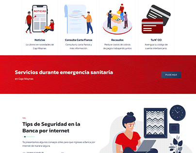
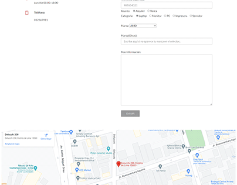
Sistemas de identidad y piezas de comunicación.
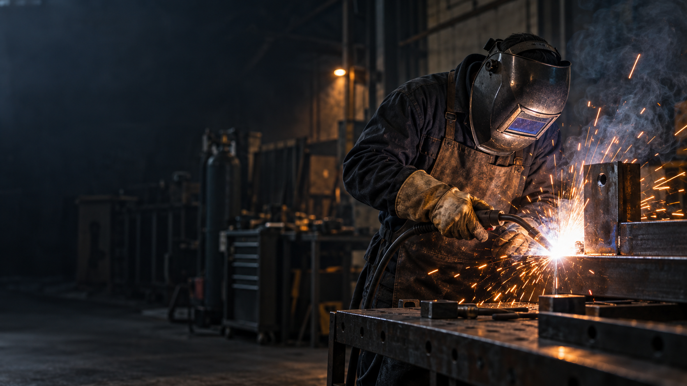
Diseño de identidad visual · Propuesta visual
Identidad visual para un negocio familiar de maquinados y soldadura.
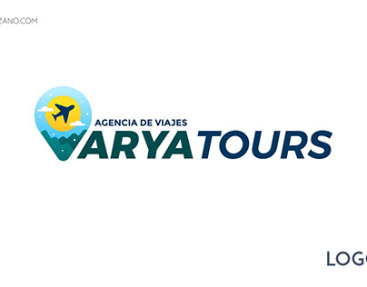
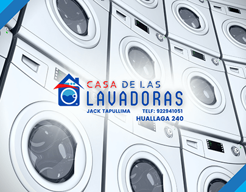
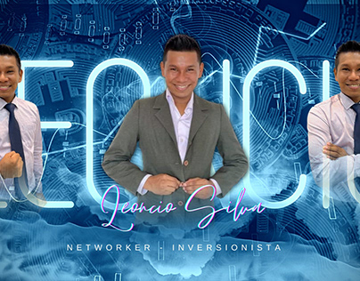
Diseño visual · Proyecto en Behance
Colección de piezas de comunicación para redes sociales.
Conceptos, prototipos y experimentos personales.
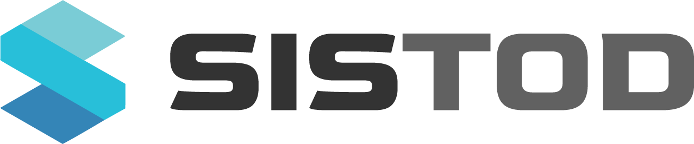
Propuesta visual · Material visual pendiente
Propuesta visual de marca para SISTOD. Las imágenes del proyecto y su descripción se añadirán cuando estén disponibles.
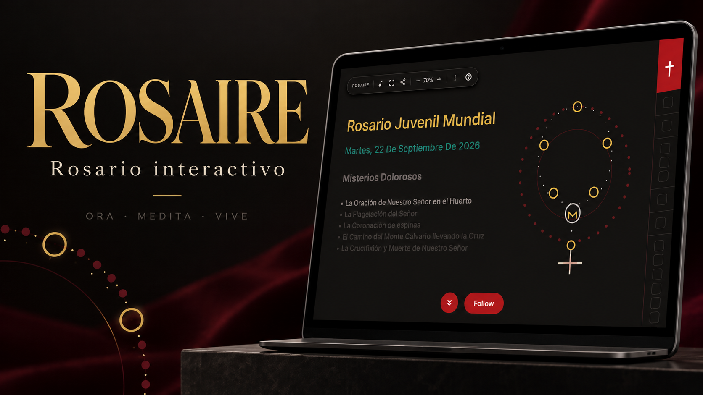
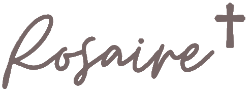
Proyecto en mi archivo de GitHub · Proyecto personal
Rosario interactivo y guiado con música, imágenes y textos para meditar los misterios.
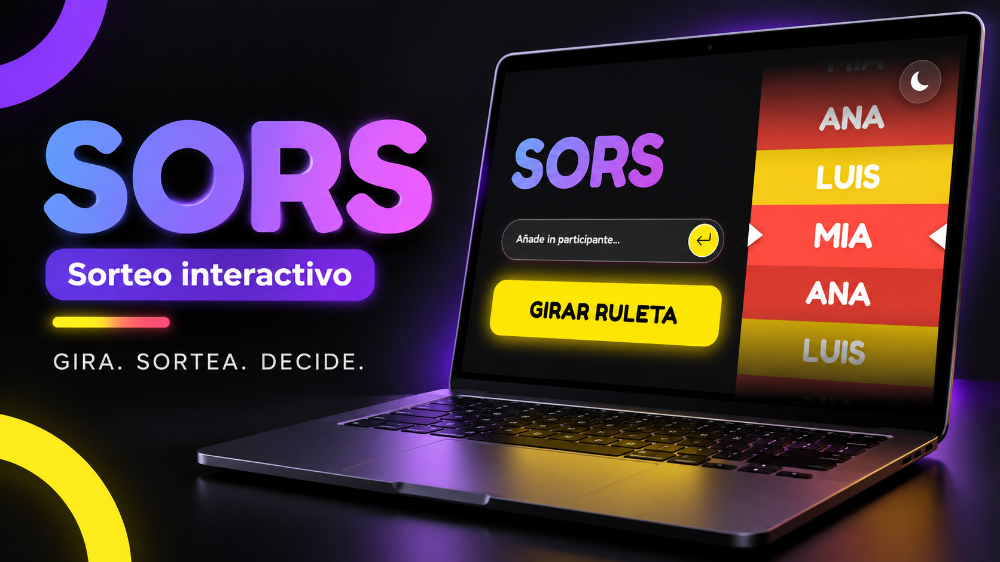
Proyecto en mi archivo de GitHub · Proyecto personal
Ruleta web para realizar un sorteo a partir de una lista de nombres.

Exploración de producto · Exploración de producto
Planner para tablet con agenda diaria, navegación por fecha, entrada con teclado o lápiz, tema oscuro y exportación PDF.
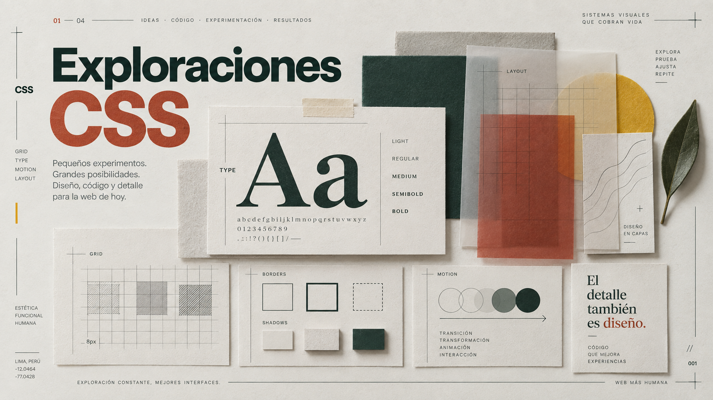
Exploración visual · Exploración visual
Pequeños experimentos de composición, tipografía, capas, bordes y movimiento.
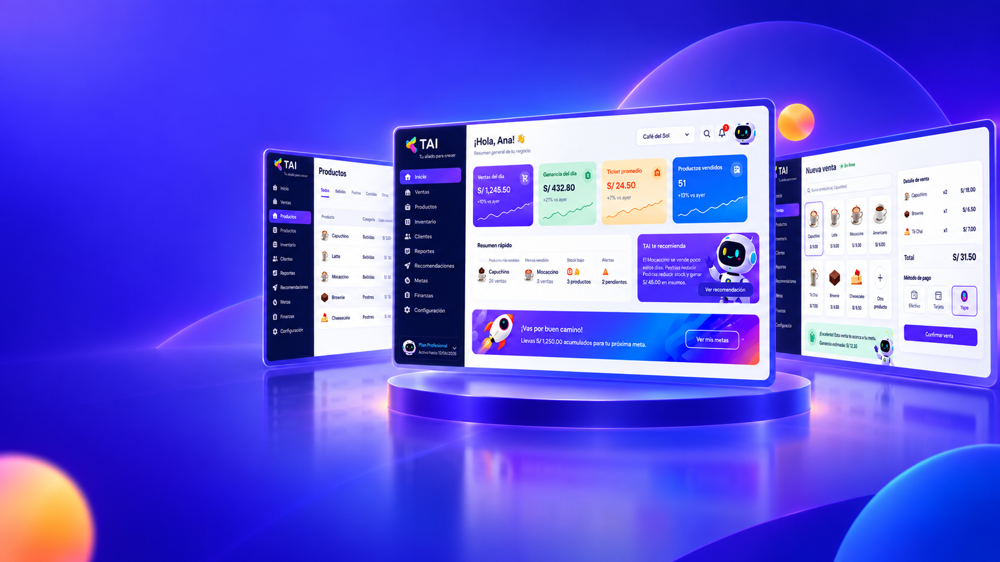
Exploración de producto · Concepto personal · no lanzado
Exploración de producto para acompañar a pequeños negocios con metas, reportes y recomendaciones.
Me gusta encontrar el orden detrás de la complejidad. Combino diseño de interacción y pensamiento sistémico para crear productos útiles, comprensibles y consistentes.
“Si un problema se repite, diseñemos un sistema que lo resuelva desde el origen.”Gianmarco Lozano
Diseño de producto · UX/UI · Ingeniería de sistemas
Escríbeme para hablar de diseño de producto, UX/UI o desarrollo web.